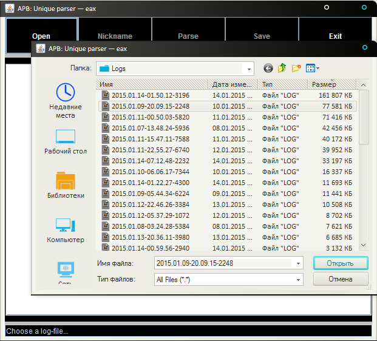
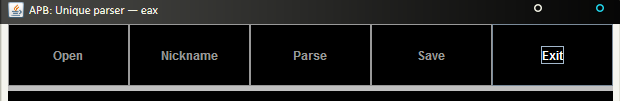
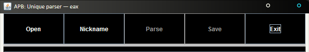
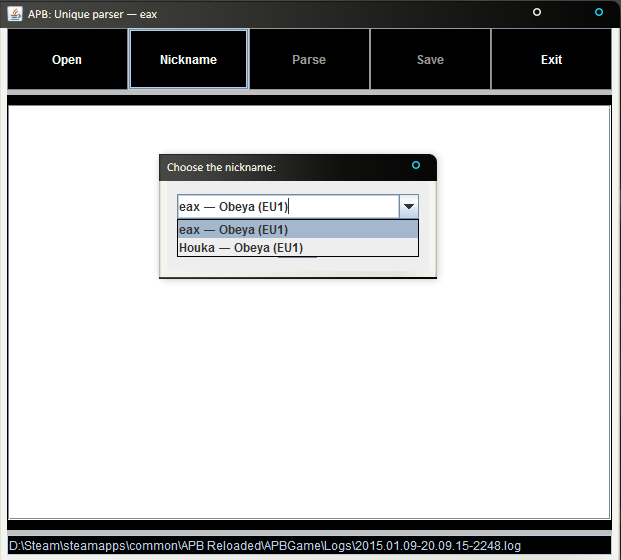
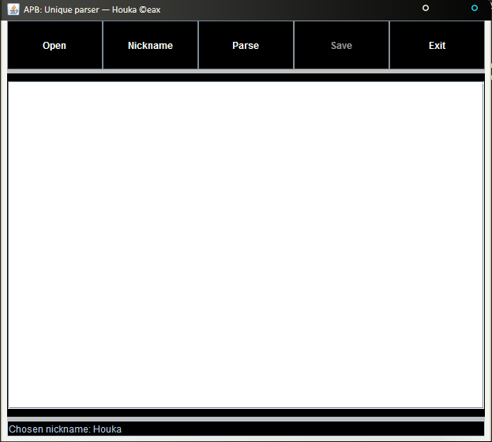
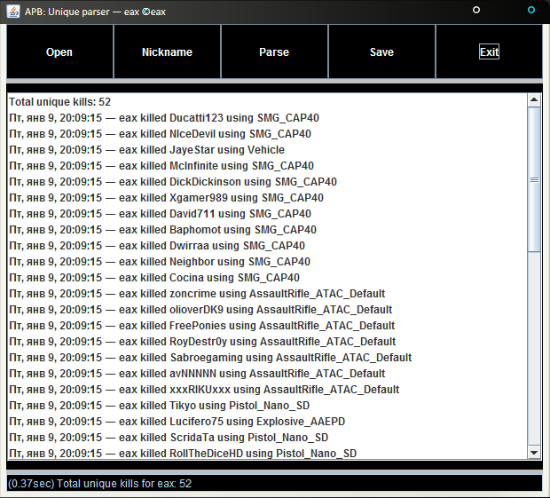
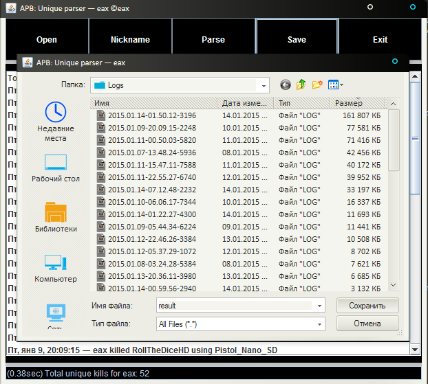
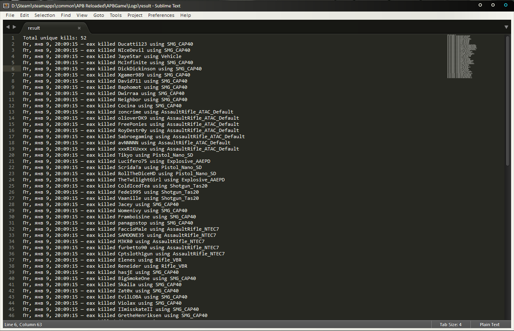

- 1) Run APBUnique.jar
- 2) Press "Open" and select the logfile (You can find it in %APB Reloaded%\APBGame\Logs directory).
For example: D:\Steam\steamapps\common\APB Reloaded\APBGame\Logs\2015.01.09-20.09.15-2248.log

- 3) Wait until APBUnique read the whole logfile (it may take 1-10 seconds).
It took ~6seconds for a 1.3GB file.

When first-pass is finished, "Open" button will change it's color from DARK to NORMAL.

- 4) Choose the nickname by pressing the appropriate button.
You will also see all of your characters, used in the chosen session.
You can enter any nickname of any faction. APBUnique reads all symbols until the next space.
For example: All of the nicknames below will give the same result - "eax".
CORRECT: "eax"
" eax "
"eax ds adsadsa "
"eax - Obeya"
WRONG: "eax- Obeya"

- 5) Once you chose the nickname, you can notice it in caption and in the status bar.

- 6) When you are ready, press the "Parse" button and get all of your unique kills during the chosen session.

- 7) If you wish to save the obtained result, press the "Save" button.


- 8) When you are done, press "Exit".